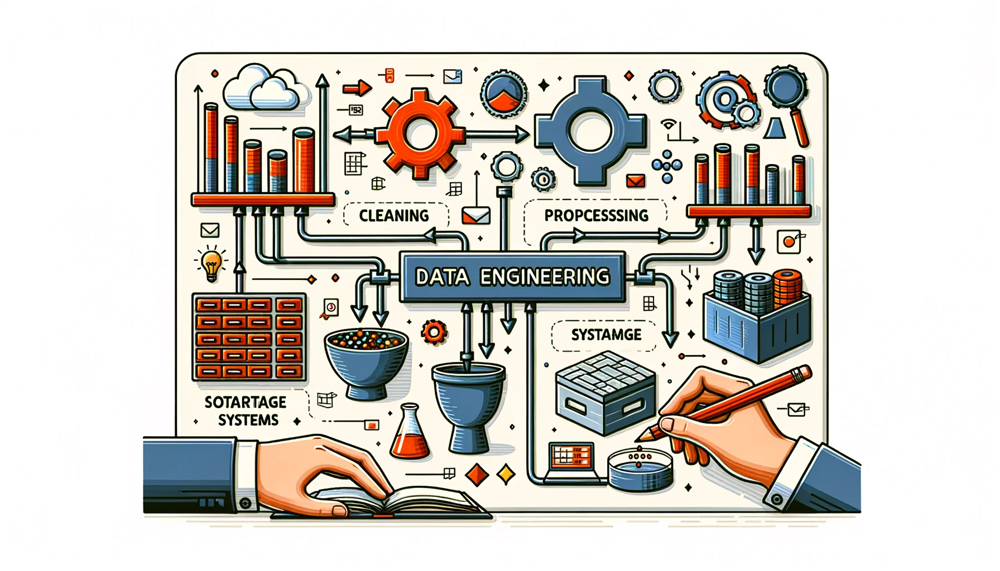

5 Data Engineering
Risorse: Slide, Video, Esercizi, Laboratori

I dati sono la linfa vitale dei sistemi di intelligenza artificiale. Senza buoni dati, anche gli algoritmi di apprendimento automatico più avanzati non avranno successo. Tuttavia, i modelli TinyML operano su dispositivi con potenza di elaborazione e memoria limitate. Questa sezione esplora le complessità della creazione di set di dati di alta qualità per alimentare i nostri modelli di intelligenza artificiale. Il data engineering implica la raccolta, l’archiviazione, l’elaborazione e la gestione dei dati per addestrare modelli di apprendimento automatico.
Comprendere l’importanza di definire chiaramente il problema e gli obiettivi quando si intraprende un progetto di ML.
Riconoscere varie tecniche di sourcing dei dati, come web scraping, crowdsourcing e generazione di dati sintetici, insieme ai loro vantaggi e limiti.
Comprendere la necessità di un’etichettatura dei dati ponderata, utilizzando approcci manuali o assistiti dall’intelligenza artificiale, per creare set di dati di training di alta qualità.
Imparare brevemente diversi metodi per archiviare e gestire i dati, come database, data warehouse e data lake.
Comprendere il ruolo della trasparenza attraverso la documentazione di metadati e set di dati e il monitoraggio della provenienza dei dati per facilitare l’etica, l’audit e la riproducibilità.
Comprendere come i protocolli di licenza regolano l’accesso e l’utilizzo dei dati legali, richiedendo un’attenta conformità.
Riconoscere le principali sfide nell’ingegneria dei dati, tra cui rischi per la privacy, lacune di rappresentazione, restrizioni legali sull’accesso ai dati e bilanciamento delle priorità concorrenti.
5.1 Introduzione
Si immagini un mondo in cui l’intelligenza artificiale può diagnosticare malattie con una precisione senza precedenti, ma solo se i dati utilizzati per addestrarla sono imparziali e affidabili. È qui che entra in gioco il “data engineering” [ingegneria dei dati]. Sebbene oltre il 90% dei dati mondiali sia stato creato negli ultimi due decenni, questa enorme quantità di informazioni è utile solo per creare modelli di intelligenza artificiale efficaci con un’elaborazione e una preparazione adeguate. L’ingegneria dei dati colma questa lacuna trasformando i dati grezzi in un formato di alta qualità che alimenta l’innovazione dell’intelligenza artificiale. Nel mondo odierno basato sui dati, proteggere la privacy degli utenti è fondamentale. Che siano obbligatorie per legge o guidate dalle preoccupazioni degli utenti, le tecniche di anonimizzazione come la privacy differenziale e l’aggregazione sono fondamentali per mitigare i rischi per la privacy. Tuttavia, un’implementazione attenta è fondamentale per garantire che questi metodi non compromettano l’utilità dei dati. I creatori di set di dati affrontano complesse sfide di privacy e rappresentazione quando creano dati di addestramento di alta qualità, in particolare per domini sensibili come l’assistenza sanitaria. Dal punto di vista legale, i creatori potrebbero dover rimuovere identificatori diretti come nomi ed età. Anche senza obblighi legali, la rimozione di tali informazioni può aiutare a creare fiducia negli utenti. Tuttavia, un’eccessiva anonimizzazione può compromettere l’utilità del set di dati. Tecniche come la privacy differenziale\(^{1}\), l’aggregazione e la riduzione dei dettagli forniscono alternative per bilanciare privacy e utilità, ma hanno degli svantaggi. I creatori devono trovare un equilibrio ponderato in base al caso d’uso.
Sebbene la privacy sia fondamentale, garantire modelli di intelligenza artificiale equi e solidi richiede di affrontare le lacune (gap) della rappresentazione nei dati. È fondamentale ma non sufficiente garantire la diversità tra variabili individuali come genere, razza e accento. Queste combinazioni, a volte chiamate lacune (gap) di ordine superiore, possono influire in modo significativo sulle prestazioni del modello. Ad esempio, un set di dati medico potrebbe avere dati bilanciati su genere, età e diagnosi individualmente, ma non ha abbastanza casi per catturare donne anziane con una condizione specifica. Tali higher-order gaps [lacune di ordine superiore] non sono immediatamente evidenti, ma possono influire in modo critico sulle prestazioni del modello.
La creazione di dati di training utili ed etici richiede una considerazione globale dei rischi per la privacy e delle lacune di rappresentazione. Le soluzioni perfette elusive necessitano di pratiche di ingegneria dei dati coscienziose come l’anonimizzazione, l’aggregazione, il sotto-campionamento di gruppi sovrarappresentati e la generazione di dati sintetizzati per bilanciare esigenze contrastanti. Ciò facilita modelli che sono sia accurati che socialmente responsabili. La collaborazione interfunzionale e i controlli esterni possono anche rafforzare i dati di training. Le sfide sono molteplici ma superabili con uno sforzo ponderato.
Iniziamo discutendo della raccolta dati: Dove reperiamo i dati e come li raccogliamo? Le opzioni spaziano dall’estrazione di dati dal web, all’accesso alle API e all’utilizzo di sensori e dispositivi IoT, fino alla conduzione di sondaggi e alla raccolta di input dagli utenti. Questi metodi riflettono pratiche del mondo reale. Successivamente, approfondiremo l’etichettatura dei dati, tenendo conto anche del coinvolgimento umano. Discuteremo i compromessi e le limitazioni dell’etichettatura umana ed esploreremo i metodi emergenti per l’etichettatura automatizzata. Successivamente, affronteremo la pulizia e la preelaborazione dei dati, un passaggio cruciale ma spesso sottovalutato nella preparazione dei dati grezzi per l’addestramento del modello di intelligenza artificiale. Segue l’aumento dei dati, una strategia per migliorare set di dati limitati generando campioni sintetici. Ciò è particolarmente pertinente per i sistemi embedded, poiché molti casi d’uso necessitano di ampi repository di dati prontamente disponibili per la cura [https://it.wikipedia.org/wiki/Data_curation]. La generazione di dati sintetici emerge come un’alternativa praticabile con vantaggi e svantaggi. Parleremo anche del versioning del dataset, sottolineando l’importanza di tracciare le modifiche dei dati nel tempo. I dati sono in continua evoluzione; quindi, è fondamentale ideare strategie per gestire e archiviare dataset espansivi. Alla fine di questa sezione, si avrà una comprensione completa dell’intera pipeline di dati, dalla raccolta all’archiviazione, essenziale per rendere operativi i sistemi di intelligenza artificiale. Intraprendiamo questo viaggio!
5.2 Definizione del Problema
In molti domini di machine learning, algoritmi sofisticati sono al centro dell’attenzione, mentre l’importanza fondamentale della qualità dei dati viene spesso trascurata. Questa negligenza dà origine a “Data Cascades” di Sambasivan et al. (2021), eventi in cui le lacune nella qualità dei dati si sommano, portando a conseguenze negative a valle come previsioni errate, cessazioni di progetti e persino potenziali danni alle comunità.
Figura fig-cascades illustra queste potenziali insidie nei dati in ogni fase e come influenzano l’intero processo lungo la linea. L’influenza degli errori nella raccolta dei dati è particolarmente pronunciata. Come illustrato nella figura, qualsiasi lacuna in questa fase iniziale diventerà evidente nelle fasi successive (nella valutazione e nell’implementazione del modello) e potrebbe portare a conseguenze costose, come l’abbandono dell’intero modello e il riavvio da zero. Pertanto, investire in tecniche di ingegneria dei dati fin dall’inizio ci aiuterà a rilevare gli errori in anticipo, mitigando gli effetti a cascata illustrati nella figura.
Nonostante molti professionisti del ML riconoscano l’importanza dei dati, altri segnalano di dover affrontare queste “cascate”. Ciò evidenzia un problema sistemico: mentre il fascino dello sviluppo di modelli avanzati rimane, i dati spesso devono essere maggiormente apprezzati.
Keyword Spotting (KWS) fornisce un esempio eccellente di TinyML in azione, come illustrato in Figura fig-keywords. Questa tecnologia è fondamentale per le interfacce abilitate alla voce su dispositivi endpoint come gli smartphone. In genere funzionando come motori di wake-word leggeri, i sistemi KWS sono costantemente attivi, in ascolto di una frase specifica per attivare ulteriori azioni. Come illustrato nella figura, quando diciamo “OK, Google” o “Alexa”, questo avvia un processo su un microcontrollore embedded nel dispositivo. Nonostante le loro risorse limitate, questi microcontrollori svolgono un ruolo importante nel consentire interazioni vocali senza interruzioni con i dispositivi, spesso operando in ambienti con elevato rumore ambientale. L’unicità della wake-word, come mostrato nella figura, aiuta a ridurre al minimo i falsi positivi, assicurando che il sistema non venga attivato inavvertitamente.
È importante comprendere che queste tecnologie di individuazione delle “parole chiave” non sono isolate; si integrano perfettamente in sistemi più grandi, elaborando segnali in modo continuo e gestendo al contempo un basso consumo energetico. Questi sistemi vanno oltre il semplice riconoscimento delle parole chiave, evolvendosi per facilitare diversi rilevamenti di suoni, come la rottura di un vetro. Questa evoluzione è orientata alla creazione di dispositivi intelligenti in grado di comprendere e rispondere ai comandi vocali, annunciando un futuro in cui anche gli elettrodomestici possono essere controllati tramite interazioni vocali.
Creare un modello KWS affidabile è un compito complesso. Richiede una profonda comprensione dello scenario di distribuzione, che comprenda dove e come funzioneranno questi dispositivi. Ad esempio, l’efficacia di un modello KWS non riguarda solo il riconoscimento di una parola; riguarda la sua distinzione tra vari accenti e rumori di sottofondo, che si tratti di un bar affollato o del suono stridulo di una televisione in un soggiorno o in una cucina dove questi dispositivi sono comunemente presenti. Riguarda la garanzia che un sussurrato “Alexa” nel cuore della notte o un urlato “OK Google” in un mercato rumoroso vengano riconosciuti con la stessa precisione.
Inoltre, molti degli attuali assistenti vocali KWS supportano un numero limitato di lingue, lasciando una parte sostanziale della diversità linguistica mondiale non rappresentata. Questa limitazione è in parte dovuta alla difficoltà di raccogliere e monetizzare i dati per le lingue parlate da popolazioni più piccole. La distribuzione “long-tail” [https://it.wikipedia.org/wiki/Coda_lunga] delle lingue implica che molte lingue hanno dati limitati, rendendo difficile lo sviluppo di tecnologie di supporto.
Questo livello di accuratezza e robustezza dipende dalla disponibilità e dalla qualità dei dati, dalla capacità di etichettare correttamente i dati e dalla trasparenza dei dati per l’utente finale prima che vengano utilizzati per addestrare il modello. Tuttavia, tutto inizia con una chiara comprensione della dichiarazione o definizione del problema.
In genere, in ML, la definizione del problema ha alcuni passaggi chiave:
Identificare chiaramente la definizione del problema
Definire obiettivi chiari
Stabilire un benchmark [riferimento] di successo
Comprendere l’impegno/l’uso dell’utente finale
Comprendere i vincoli e le limitazioni dell’implementazione
Seguito infine dalla raccolta dati.
Una solida base di progetto è essenziale per la sua traiettoria e il suo successo finale. Al centro di questa base c’è innanzitutto l’identificazione di un problema chiaro, come garantire che i comandi vocali nei sistemi di assistenza vocale siano riconosciuti in modo coerente in diversi ambienti. Obiettivi chiari, come la creazione di set di dati rappresentativi per scenari diversi, forniscono una direzione unificata. I benchmark, come l’accuratezza del sistema nel rilevamento delle parole chiave, offrono risultati misurabili per valutare i progressi. Il coinvolgimento delle parti interessate, dagli utenti finali agli investitori, fornisce informazioni preziose e garantisce l’allineamento con le esigenze del mercato. Inoltre, quando si esplorano ambiti come l’assistenza vocale, è importante comprendere i limiti della piattaforma. I sistemi embedded, come i microcontrollori, sono dotati di limitazioni intrinseche di potenza di elaborazione, memoria ed efficienza energetica. Riconoscere queste limitazioni garantisce che le funzionalità, come il rilevamento delle parole chiave, siano personalizzate per funzionare in modo ottimale, bilanciando le prestazioni col risparmio delle risorse.
In questo contesto, usando KWS come esempio, possiamo suddividere ciascuno dei passaggi come segue:
Identificazione del Problema: In sostanza, KWS rileva parole chiave specifiche tra suoni ambientali e altre parole pronunciate. Il problema principale è progettare un sistema in grado di riconoscere queste parole chiave con elevata accuratezza, bassa latenza e minimi falsi positivi o negativi, soprattutto se distribuito su dispositivi con risorse di elaborazione limitate.
Impostazione di Obiettivi Chiari: Gli obiettivi per un sistema KWS potrebbero includere:
- Raggiungimento di un tasso di accuratezza specifico (ad esempio, accuratezza del 98% nel rilevamento delle parole chiave).
- Garanzia di bassa latenza (ad esempio, rilevamento delle parole chiave e risposta entro 200 millisecondi).
- Riduzione al minimo del consumo di energia per estendere la durata della batteria sui dispositivi embedded.
- Garanzia che le dimensioni del modello siano ottimizzate per la memoria disponibile sul dispositivo.
Benchmark per il successo: Stabilire metriche chiare per misurare il successo del sistema KWS. Questo potrebbe includere:
- Tasso di Veri Positivi: La percentuale di parole chiave identificate correttamente.
- Tasso di Falsi Positivi: La percentuale di parole chiave non identificate erroneamente come parole chiave.
- Tempo di Risposta: Il tempo impiegato dall’enunciazione della parola chiave alla risposta del sistema.
- Consumo Energetico: Potenza media utilizzata durante il rilevamento della parola chiave.
Coinvolgimento e Comprensione delle Parti Interessate:: Coinvolgere le parti interessate, tra cui produttori di dispositivi, sviluppatori di hardware e software e utenti finali. Comprendere le loro esigenze, capacità e vincoli. Ad esempio:
- I produttori di dispositivi potrebbero dare priorità al basso consumo energetico.
- Gli sviluppatori di software potrebbero enfatizzare la facilità di integrazione.
- Gli utenti finali darebbero priorità all’accuratezza e alla reattività.
Comprensione dei Vincoli e delle Limitazioni dei Sistemi Embedded: I dispositivi embedded presentano una serie di problematiche:
- Limiti della Memoria: I modelli KWS devono essere leggeri per adattarsi ai vincoli di memoria dei dispositivi embedded. In genere, i modelli KWS devono essere piccoli quanto 16 KB per adattarsi alla “isola always-on” [porzione sempre attiva] del SoC. Inoltre, questa è solo la dimensione del modello. Anche il codice applicativo aggiuntivo per la pre-elaborazione potrebbe dover rientrare nei vincoli di memoria.
- Potenza di Elaborazione: Le capacità di calcolo dei dispositivi embedded sono limitate (alcune centinaia di MHz di velocità di clock), quindi il modello KWS deve essere ottimizzato per l’efficienza.
- Consumo Energetico: Poiché molti dispositivi embedded sono alimentati a batteria, il sistema KWS deve essere efficiente dal punto di vista energetico.
- Vincoli Ambientali: I dispositivi potrebbero essere distribuiti in vari ambienti, dalle silenziose camere da letto agli ambienti industriali rumorosi. Il sistema KWS deve essere sufficientemente robusto per funzionare efficacemente in questi scenari.
Raccolta e Analisi dei Dati: Per un sistema KWS, la qualità e la diversità dei dati sono fondamentali. Le considerazioni potrebbero includere:
- Varietà di Accenti: Raccogliere dati da parlanti con accenti diversi per garantire un riconoscimento ad ampio raggio.
- Rumori di Sottofondo: Includere campioni di dati con diversi rumori ambientali per addestrare il modello per scenari del mondo reale.
- Variazioni delle Parole Chiave: Le persone potrebbero pronunciare le parole chiave in modo diverso o avere leggere variazioni nella parola di attivazione stessa. Assicurarsi che il set di dati catturi queste sfumature.
Feedback e Perfezionamento Iterativo: Una volta sviluppato un prototipo di sistema KWS, è fondamentale testarlo in scenari del mondo reale, raccogliere feedback e perfezionare iterativamente il modello. Ciò garantisce che il sistema rimanga allineato con il problema e gli obiettivi definiti. Ciò è importante perché gli scenari di distribuzione cambiano nel tempo man mano che le cose si evolvono.
Esplorare una guida pratica per la creazione e l’implementazione di sistemi Keyword Spotting utilizzando TensorFlow Lite Micro. Seguire i passaggi dalla raccolta dati all’addestramento del modello e all’implementazione nei microcontrollori. Imparare a creare modelli KWS efficienti che riconoscono parole chiave specifiche in mezzo al rumore di fondo. Perfetto per chi è interessato all’apprendimento automatico sui sistemi embedded. Sbloccare il potenziale dei dispositivi “voice-enabled” con TensorFlow Lite Micro!

Il capitolo corrente sottolinea il ruolo essenziale della qualità dei dati nell’apprendimento automatico, utilizzando come esempio i sistemi Keyword Spotting. Descrive i passaggi chiave, dalla definizione del problema al coinvolgimento delle parti interessate, sottolineando il feedback iterativo. Il prossimo capitolo approfondirà la gestione della qualità dei dati, discutendone le conseguenze e le tendenze future, concentrandosi sull’importanza di dati diversificati e di alta qualità nello sviluppo di sistemi di intelligenza artificiale, affrontando considerazioni etiche e metodi di reperimento dei dati.
5.3 Ricerca dei Dati.
La qualità e la diversità dei dati raccolti sono importanti per sviluppare sistemi di intelligenza artificiale accurati e robusti. Il reperimento di dati di training di alta qualità richiede un’attenta considerazione degli obiettivi, delle risorse e delle implicazioni etiche. I dati possono essere ottenuti da varie fonti a seconda delle esigenze del progetto:
5.3.1 Dataset preesistenti
Piattaforme come Kaggle e UCI Machine Learning Repository forniscono un comodo punto di partenza. I dataset preesistenti sono preziosi per ricercatori, sviluppatori e aziende. Uno dei loro principali vantaggi è l’efficienza dei costi. Creare un set di dati da zero può richiedere molto tempo ed essere costoso, quindi accedere a dati già pronti può far risparmiare risorse significative. Inoltre, molti set di dati, come ImageNet, sono diventati parametri di riferimento standard nella comunità di apprendimento automatico, consentendo confronti di prestazioni coerenti tra diversi modelli e algoritmi. Questa disponibilità di dati significa che gli esperimenti possono essere avviati immediatamente senza ritardi nella raccolta e nella preelaborazione dei dati. In un campo in rapida evoluzione come il ML, questa praticità è importante.
La garanzia di qualità che deriva dai dataset preesistenti più diffusi è importante da considerare perché diversi set di dati contengono errori. Ad esempio, nel set di dati ImageNet è stato riscontrato oltre il 6,4% di errori. Dato il loro uso diffuso, la comunità spesso identifica e corregge eventuali errori o distorsioni in questi set di dati. Questa garanzia è particolarmente utile per studenti e nuovi arrivati nel campo, in quanto possono concentrarsi sull’apprendimento e sulla sperimentazione senza preoccuparsi dell’integrità dei dati. La documentazione di supporto che spesso accompagna i set di dati esistenti è inestimabile, sebbene ciò si applichi generalmente solo a quelli ampiamente utilizzati. Una buona documentazione fornisce approfondimenti sul processo di raccolta dati e sulle definizioni delle variabili e talvolta offre persino prestazioni del modello di base. Queste informazioni non solo aiutano la comprensione, ma promuovono anche la riproducibilità nella ricerca, un pilastro dell’integrità scientifica; attualmente, c’è una crisi attorno al miglioramento della riproducibilità nei sistemi di apprendimento automatico. Quando altri ricercatori hanno accesso agli stessi dati, possono convalidare i risultati, testare nuove ipotesi o applicare metodologie diverse, consentendoci così di basarci più rapidamente sul lavoro reciproco.
Sebbene piattaforme come Kaggle e UCI Machine Learning Repository siano risorse inestimabili, è essenziale comprendere il contesto in cui sono stati raccolti i dati. I ricercatori dovrebbero fare attenzione al potenziale “overfitting” quando utilizzano set di dati popolari, poiché potrebbero essere stati addestrati più modelli su di essi, portando a metriche di prestazioni gonfiate. A volte, questi set di dati non riflettono i dati del mondo reale.
Negli ultimi anni, si è sviluppata una crescente consapevolezza dei problemi di “bias” [distorsione], validità e riproducibilità che possono esistere nei set di dati di apprendimento automatico. Figura fig-misalignment illustra un’altra preoccupazione critica: il potenziale di disallineamento quando si utilizza lo stesso set di dati per addestrare modelli diversi.
Come mostrato in Figura fig-misalignment, addestrare più modelli utilizzando lo stesso set di dati può comportare un “disallineamento” tra i modelli e il mondo. Questo disallineamento crea un intero ecosistema di modelli che riflette solo un sottoinsieme ristretto di dati del mondo reale. Un tale scenario può portare a una generalizzazione limitata e a risultati potenzialmente distorti in varie applicazioni che utilizzano questi modelli.
5.3.2 Web Scraping
Il “web scraping” si riferisce a tecniche automatizzate per l’estrazione di dati dai siti Web. In genere comporta l’invio di richieste HTTP ai server Web, il recupero di contenuti HTML e l’analisi di tali contenuti per estrarre informazioni rilevanti. Gli strumenti e i framework più diffusi per il web scraping includono Beautiful Soup, Scrapy e Selenium. Questi strumenti offrono diverse funzionalità, dall’analisi dei contenuti HTML all’automazione delle interazioni con i browser Web, in particolare per i siti Web che caricano i contenuti in modo dinamico tramite JavaScript.
Il web scraping può raccogliere efficacemente grandi set di dati per l’addestramento di modelli di apprendimento automatico, in particolare quando i dati etichettati da esseri umani sono scarsi. Per la ricerca sulla visione artificiale, il web scraping consente la raccolta di enormi volumi di immagini e video. I ricercatori hanno utilizzato questa tecnica per creare set di dati influenti come ImageNet e OpenImages. Ad esempio, si potrebbero effettuare scraping di siti di e-commerce per accumulare foto di prodotti per il riconoscimento di oggetti o piattaforme di social media per raccogliere caricamenti di utenti per l’analisi facciale. Anche prima di ImageNet, il progetto LabelMe di Stanford ha raschiato (scraped) Flickr per oltre 63.000 immagini annotate che coprono centinaia di categorie di oggetti.
Oltre alla visione artificiale, lo scraping web supporta la raccolta di dati testuali per il linguaggio naturale. I ricercatori possono “raschiare” siti di notizie per dati di analisi del “sentiment”, forum e siti di recensioni per la ricerca sui sistemi di dialogo o social media per la modellazione di argomenti. Ad esempio, i dati di training per il chatbot ChatGPT sono stati ottenuti tramite scraping di gran parte dell’Internet pubblico. I repository GitHub sono stati sottoposti a scraping per addestrare l’assistente di codifica Copilot AI di GitHub.
Il web scraping può anche raccogliere dati strutturati, come prezzi delle azioni, dati meteorologici o informazioni sui prodotti, per applicazioni analitiche. Una volta che i dati sono stati “raschiati”, è essenziale archiviarli in modo strutturato, spesso utilizzando database o data warehouse. Una corretta gestione dei dati garantisce l’usabilità dei dati raccolti per analisi e applicazioni future.
Tuttavia, mentre il web scraping offre numerosi vantaggi, ci sono limitazioni significative e considerazioni etiche da sostenere. Non tutti i siti Web consentono lo scraping e la violazione di queste restrizioni può portare a ripercussioni legali. Anche lo scraping di materiale protetto da copyright o comunicazioni private è immorale e potenzialmente illegale. Il web scraping etico impone l’aderenza al file ‘robots.txt’ di un sito web, che delinea le sezioni del sito a cui è possibile accedere e che possono essere scansionate dai bot automatizzati.
Per scoraggiare lo scraping automatizzato, molti siti web implementano limiti di velocità. Se un bot invia troppe richieste in un breve periodo, potrebbe essere temporaneamente bloccato, limitando la velocità di accesso ai dati. Inoltre, la natura dinamica dei contenuti web implica che i dati estratti a intervalli diversi potrebbero richiedere maggiore coerenza, ponendo sfide per gli studi a lungo termine. Tuttavia, ci sono tendenze emergenti come la Web Navigation in cui gli algoritmi di apprendimento automatico possono navigare automaticamente nel sito web per accedere ai contenuti dinamici.
Il volume di dati pertinenti disponibili per lo scraping potrebbe essere limitato per argomenti di nicchia. Ad esempio, mentre lo scraping per argomenti comuni come immagini di gatti e cani potrebbe produrre dati abbondanti, la ricerca di condizioni mediche rare potrebbe essere meno fruttuosa. Inoltre, i dati ottenuti tramite scraping sono spesso non strutturati e rumorosi, il che richiede un’accurata pre-elaborazione e pulizia. È fondamentale comprendere che non tutti i dati raccolti saranno di alta qualità o accuratezza. L’impiego di metodi di verifica, come il riferimento incrociato con fonti alternative di dati, può migliorare l’affidabilità dei dati.
Quando si esegue lo scraping di dati personali, sorgono problemi di privacy, sottolineando la necessità di anonimizzazione. Pertanto, è fondamentale aderire ai “Termini del Servizio” di un sito Web, limitare la raccolta di dati a quelli di dominio pubblico e garantire l’anonimato di tutti i dati personali acquisiti.
Mentre il web scraping può essere un metodo scalabile per accumulare grandi set di dati di training per sistemi di intelligenza artificiale, la sua applicabilità è limitata a tipi di dati specifici. Ad esempio, il web scraping rende più complessa la ricerca di dati per unità di misura inerziali (IMU) per il riconoscimento dei gesti. Al massimo, si può effettuare lo scraping di un set di dati esistente.
La raccolta dal Web può produrre dati incoerenti o imprecisi. Ad esempio, la foto in Figura fig-traffic-light viene visualizzata quando si cerca “semaforo” su Google Images. È un’immagine del 1914 che mostra semafori obsoleti, che sono anche appena distinguibili a causa della scarsa qualità dell’immagine. Questo può essere problematico per i set di dati estratti dal Web, poiché lo inquina con campioni di dati non applicabili (vecchi).

Scoprire la potenza del web scraping con Python usando librerie come Beautiful Soup e Pandas. Questo esercizio estrarrà la documentazione Python per i nomi e le descrizioni delle funzioni ed esplorerà le statistiche dei giocatori NBA. Alla fine, si avranno le competenze per estrarre e analizzare dati da siti Web reali. Pronti all’immersione? Accedere al notebook Google Colab qui sotto e iniziare a fare pratica!

5.3.3 Crowdsourcing
Il crowdsourcing per i dataset è la pratica di ottenere dati utilizzando i servizi di molte persone, sia da una comunità specifica che dal pubblico in generale, in genere tramite Internet. Invece di affidarsi a un piccolo team o a un’organizzazione specifica per raccogliere o etichettare i dati, il crowdsourcing sfrutta lo sforzo collettivo di un vasto gruppo distribuito di partecipanti. Servizi come Amazon Mechanical Turk consentono la distribuzione di attività di annotazione a una forza lavoro ampia e diversificata. Questo facilita la raccolta di etichette per attività complesse come l’analisi del “sentiment” o il riconoscimento delle immagini che richiedono il giudizio umano.
Il crowdsourcing è emerso come un approccio efficace per la raccolta di dati e la risoluzione dei problemi. Uno dei principali vantaggi del crowdsourcing è la scalabilità: distribuendo le attività a un ampio pool globale di collaboratori su piattaforme digitali, i progetti possono elaborare rapidamente enormi volumi di dati. Ciò rende il crowdsourcing ideale per l’etichettatura, la raccolta e l’analisi di dati su larga scala.
Inoltre, il crowdsourcing attinge a un gruppo eterogeneo di partecipanti, apportando un’ampia gamma di prospettive, intuizioni culturali e capacità linguistiche che possono arricchire i dati e migliorare la risoluzione creativa dei problemi in modi che un gruppo più omogeneo potrebbe non fare. Poiché il crowdsourcing attinge da un vasto pubblico oltre i canali tradizionali, è più conveniente rispetto ai metodi convenzionali, soprattutto per microattività più semplici.
Le piattaforme di crowdsourcing consentono anche una grande flessibilità, poiché i parametri delle attività possono essere modificati in tempo reale in base ai risultati iniziali. Ciò crea un ciclo di feedback per miglioramenti iterativi al processo di raccolta dati. I lavori complessi possono essere suddivisi in microattività e distribuiti a più persone, con risultati convalidati in modo incrociato assegnando versioni ridondanti della stessa attività. Se gestito in modo ponderato, il crowdsourcing consente il coinvolgimento della comunità attorno a un progetto collaborativo, in cui i partecipanti trovano una ricompensa nel contribuire.
Tuttavia, mentre il crowdsourcing offre numerosi vantaggi, è essenziale affrontarlo con una strategia chiara. Mentre fornisce l’accesso a un set diversificato di annotatori, introduce anche variabilità nella qualità delle annotazioni. Inoltre, piattaforme come Mechanical Turk potrebbero non sempre catturano uno spettro demografico completo; spesso, gli individui esperti di tecnologia sono sovra-rappresentati, mentre i bambini e gli anziani potrebbero essere sotto-rappresentati. Fornire istruzioni chiare e formazione per gli annotatori è fondamentale. Controlli periodici e convalide dei dati etichettati aiutano a mantenere la qualità. Ciò si ricollega all’argomento della chiara definizione del problema di cui abbiamo discusso in precedenza. Il crowdsourcing per i set di dati richiede anche una particolare attenzione alle considerazioni etiche. È fondamentale assicurarsi che i partecipanti siano informati su come verranno utilizzati i loro dati e che la loro privacy sia protetta. Il controllo di qualità tramite protocolli dettagliati, trasparenza nell’approvvigionamento e verifica è essenziale per garantire risultati affidabili.
Per TinyML, il crowdsourcing può presentare alcune sfide uniche. I dispositivi TinyML sono altamente specializzati per attività particolari entro vincoli rigorosi. Di conseguenza, i dati di cui hanno bisogno tendono a essere molto specifici. Ottenere tali dati specializzati da un pubblico generico può essere difficile tramite crowdsourcing. Ad esempio, le applicazioni TinyML spesso si basano su dati raccolti da determinati sensori o hardware. Il crowdsourcing richiederebbe ai partecipanti di avere accesso a dispositivi molto specifici e coerenti, come i microfoni, con le stesse frequenze di campionamento. Queste sfumature hardware presentano ostacoli anche per semplici attività audio come l’individuazione di parole chiave.
Oltre all’hardware, i dati stessi necessitano di elevata granularità e qualità, dati i limiti di TinyML. Può essere difficile garantire ciò quando si fa crowdsourcing da chi non ha familiarità con il contesto e i requisiti dell’applicazione. Ci sono anche potenziali problemi relativi alla privacy, alla raccolta in tempo reale, alla standardizzazione e alle competenze tecniche. Inoltre, la natura ristretta di molte attività TinyML semplifica l’etichettatura accurata dei dati con la giusta comprensione. I partecipanti potrebbero aver bisogno di un contesto completo per fornire annotazioni affidabili.
Pertanto, mentre il crowdsourcing può funzionare bene in molti casi, le esigenze specializzate di TinyML introducono sfide uniche per i dati. È richiesta un’attenta pianificazione per linee guida, targeting e controllo di qualità. Per alcune applicazioni, il crowdsourcing potrebbe essere fattibile, ma altre potrebbero richiedere più lavoro per la raccolta dati più mirati per ottenere dati di training pertinenti e di alta qualità.
5.3.4 Dati Sintetici
La generazione di dati sintetici può essere una soluzione preziosa per affrontare le limitazioni della raccolta dati. Figura fig-synthetic-data illustra come funziona questo processo: i dati sintetici vengono uniti ai dati storici per creare un set di dati più ampio e diversificato per l’addestramento del modello.
Come mostrato nella figura, i dati sintetici implicano la creazione di informazioni che non sono state originariamente catturate o osservate, ma vengono generate utilizzando algoritmi, simulazioni o altre tecniche per assomigliare ai dati del mondo reale. Questo approccio è diventato particolarmente prezioso in campi in cui i dati del mondo reale sono scarsi, costosi o eticamente difficili da ottenere, come nelle applicazioni TinyML. Varie tecniche, tra cui le “Generative Adversarial Networks (GAN)”, possono produrre dati sintetici di alta qualità quasi indistinguibili dai dati reali. Questi metodi hanno fatto notevoli progressi, rendendo la generazione di dati sintetici sempre più realistica e affidabile.
Potrebbe essere necessario disporre di più dati del mondo reale per l’analisi o l’addestramento di modelli di apprendimento automatico in molti domini, in particolare quelli emergenti. I dati sintetici possono colmare questa lacuna producendo grandi volumi di dati che imitano scenari del mondo reale. Ad esempio, rilevare il suono di un vetro che si rompe potrebbe essere difficile nelle applicazioni di sicurezza in cui un dispositivo TinyML sta cercando di identificare le effrazioni. La raccolta di dati del mondo reale richiederebbe la rottura di numerose finestre, il che è poco pratico e costoso.
Inoltre, avere un set di dati diversificato è fondamentale nell’apprendimento automatico, in particolare nel deep learning. I dati sintetici possono aumentare i set di dati esistenti introducendo varianti, migliorando così la robustezza dei modelli. Ad esempio, SpecAugment è un’eccellente tecnica di aumento dei dati per i sistemi di “Automatic Speech Recognition” (ASR).
Anche la privacy e la riservatezza sono grandi problemi. I set di dati contenenti informazioni sensibili o personali sollevano problemi di privacy quando vengono condivisi o utilizzati. I dati sintetici, essendo generati artificialmente, non hanno questi legami diretti con individui reali, consentendo un utilizzo più sicuro preservando al contempo le proprietà statistiche essenziali.
La generazione di dati sintetici, in particolare una volta stabiliti i meccanismi di generazione, può essere un’alternativa più conveniente. I dati sintetici eliminano la necessità di rompere più finestre per raccogliere dati rilevanti nello scenario applicativo di sicurezza di cui sopra.
Molti casi d’uso embedded riguardano situazioni uniche, come gli impianti di produzione, che sono difficili da simulare. I dati sintetici consentono ai ricercatori il controllo completo sul processo di generazione dei dati, consentendo la creazione di scenari o condizioni specifici che sono difficili da catturare nella vita reale.
Sebbene i dati sintetici offrano numerosi vantaggi, è essenziale utilizzarli giudiziosamente. Bisogna fare attenzione a garantire che i dati generati rappresentino accuratamente le distribuzioni sottostanti del mondo reale e non introducano distorsioni indesiderate.
Scopriamo la generazione di dati sintetici utilizzando le Generative Adversarial Network (GAN) su dati tabellari. Adotteremo un approccio pratico, immergendoci nel funzionamento del modello CTGAN e applicandolo al set di dati Synthea dal dominio sanitario. Dalla pre-elaborazione dei dati al training e valutazione del modello, procederemo passo dopo passo, imparando come creare dati sintetici, valutarne la qualità e sbloccare il potenziale delle GAN per l’aumento dei dati e le applicazioni del mondo reale.

5.4 Archiviazione Dati
L’approvvigionamento e l’archiviazione dei dati vanno di pari passo e i dati devono essere archiviati in un formato che faciliti l’accesso e l’elaborazione. A seconda del caso d’uso, possono essere utilizzati vari tipi di sistemi di archiviazione dati per archiviare i set di dati. Alcuni esempi sono mostrati in Tabella tbl-storage.
| Database | Data Warehouse | Data Lake |
|---|---|---|
| Scopo | Operativo e transazionale | Analitico |
| Tipo di dati | Strutturato | Strutturato, semi-strutturato e/o non strutturato |
| Scala | Da piccoli a grandi volumi di dati | Grandi volumi di dati integrati Grandi volumi di dati diversi |
| Esempi | MySQL | Google BigQuery, Amazon Redshift, Microsoft Azure Synapse, Google Cloud Storage, AWS S3, Azure Data Lake Storage |
I dati archiviati sono spesso accompagnati da metadati, definiti come “dati sui dati”. Forniscono informazioni contestuali dettagliate sui dati, come mezzi di creazione dei dati, ora di creazione, licenza di utilizzo dei dati allegata, ecc. Figura fig-data-collection illustra i pilastri chiave della raccolta dati e i metodi associati, evidenziando l’importanza della gestione dei dati strutturati. Ad esempio, Hugging Face ha implementato le Dataset Cards per promuovere un utilizzo responsabile dei dati. Queste “card” [schede], che si allineano al pilastro della documentazione mostrato in Figura fig-data-collection, consentono ai creatori di dataset di rivelare potenziali bias e di istruire gli utenti sui contenuti e le limitazioni di un dataset.
Le “dataset card” forniscono un contesto importante sull’utilizzo appropriato del dataset evidenziando “bia” [pregiudizi] e altri dettagli importanti. Avere questo tipo di metadati strutturati può anche consentire un rapido recupero, allineandosi ai principi di gestione efficiente dei dati illustrati nella figura. Una volta sviluppato e distribuito il modello sui dispositivi edge, i sistemi di storage possono continuare a memorizzare dati in arrivo, aggiornamenti del modello o risultati analitici, utilizzando potenzialmente metodi da più pilastri mostrati in Figura fig-data-collection. Questo processo continuo di raccolta e gestione dei dati garantisce che il modello rimanga aggiornato e pertinente nel suo ambiente operativo.
Data Governance: Con una grande quantità di archiviazione dati, è anche fondamentale disporre di policy e pratiche (ad esempio, “governance” [gestione] dei dati) che aiutino a gestire i dati durante il loro ciclo di vita, dall’acquisizione allo smaltimento. La governance dei dati descrive il modo in cui i dati vengono gestiti e include l’adozione di decisioni chiave in merito al loro accesso e controllo. Figura fig-governance illustra i diversi domini coinvolti nella governance dei dati. Implica l’esercizio dell’autorità e l’assunzione di decisioni sui dati per mantenerne la qualità, garantire la conformità, mantenere la sicurezza e ricavarne valore. La governance dei dati è resa operativa sviluppando politiche, incentivi e sanzioni, coltivando una cultura che percepisce i dati come un bene prezioso. Procedure specifiche e autorità assegnate vengono implementate per salvaguardare la qualità dei dati e monitorarne l’utilizzo e i rischi correlati.
La governance dei dati utilizza tre approcci integrativi: pianificazione e controllo, organizzativo e basato sul rischio.
L’approccio di pianificazione e controllo, comune nell’IT, allinea business e tecnologia attraverso cicli annuali e continui aggiustamenti, concentrandosi su una governance verificabile e basata su policy.
L’approccio organizzativo enfatizza la struttura, stabilendo ruoli autorevoli come Chief Data Officer e garantendo responsabilità e rendicontazione nella governance.
L’approccio basato sul rischio, intensificato dai progressi dell’IA, si concentra sull’identificazione e la gestione dei rischi intrinseci nei dati e negli algoritmi. Affronta in particolare i problemi specifici dell’IA attraverso valutazioni regolari e strategie di gestione proattiva del rischio, consentendo azioni incidentali e preventive per mitigare gli impatti indesiderati degli algoritmi.
Ecco alcuni esempi di governance dei dati in diversi settori:
Medicina: Gli Health Information Exchanges (HIE) [scambi di informazioni sanitarie] consentono la condivisione di informazioni sanitarie tra diversi operatori sanitari per migliorare l’assistenza ai pazienti. Implementano rigorose pratiche di governance dei dati per mantenere l’accuratezza, l’integrità, la privacy e la sicurezza dei dati, rispettando normative come l’Health Insurance Portability and Accountability Act (HIPAA). Le policy di governance assicurano che i dati dei pazienti siano condivisi solo con entità autorizzate e che i pazienti possano controllare l’accesso alle proprie informazioni.
Finanza: Basilea III Framework è un quadro normativo internazionale per le banche. Garantisce che le banche stabiliscano policy, pratiche e responsabilità chiare per la gestione dei dati, assicurandone accuratezza, completezza e tempestività. Non solo consente alle banche di soddisfare la conformità normativa, ma previene anche le crisi finanziarie gestendo i rischi in modo più efficace.
Governo: Le agenzie governative che gestiscono i dati dei cittadini, i registri pubblici e le informazioni amministrative implementano la governance dei dati per gestire i dati in modo trasparente e sicuro. Il sistema di previdenza sociale negli Stati Uniti e il sistema Aadhar in India sono buoni esempi di tali sistemi di governance.
Considerazioni speciali sull’archiviazione dei dati per TinyML
Formati di Archiviazione Audio Efficienti: I sistemi di individuazione delle parole chiave necessitano di formati di archiviazione audio specializzati per consentire una rapida ricerca delle parole chiave nei dati audio. I formati tradizionali come WAV e MP3 archiviano forme d’onda audio complete, che richiedono un’elaborazione estesa per la ricerca. L’individuazione delle parole chiave utilizza un archivio compresso ottimizzato per la ricerca basata su frammenti. Un approccio consiste nell’archiviazione di caratteristiche acustiche compatte anziché audio grezzo. Tale flusso di lavoro implicherebbe:
Estrazione di Caratteristiche Acustiche: I coefficienti Mel-frequency cepstral (MFCC) rappresentano comunemente importanti caratteristiche audio.
Creazione di Embedding: Gli “embedding” trasformano le caratteristiche acustiche estratte in spazi vettoriali continui, consentendo un’archiviazione dei dati più compatta e rappresentativa. Questa rappresentazione è essenziale per convertire dati ad alta dimensionalità, come l’audio, in un formato più gestibile ed efficiente per l’elaborazione e l’archiviazione.
Quantizzazione vettoriale: Questa tecnica rappresenta dati ad alta dimensionalità, come gli embedding, con vettori a bassa dimensionalità, riducendo le esigenze di archiviazione. Inizialmente, un codebook viene generato dai dati di training per definire un set di vettori di codice che rappresentano i vettori di dati originali. Successivamente, ogni vettore di dati viene abbinato alla “codeword” più vicina in base al codebook, garantendo una perdita minima di informazioni.
Archiviazione sequenziale: L’audio viene frammentato in frame brevi e le feature [caratteristiche] quantizzate (o embedded) per ogni frame vengono archiviate in sequenza per mantenere l’ordine temporale, preservando la coerenza e il contesto dei dati audio.
Questo formato consente di decodificare le feature frame per frame per la corrispondenza delle parole chiave. La ricerca delle caratteristiche è più rapida della decompressione dell’audio completo.
Selective Network Output Storage: [Archiviazione selettiva dell’output di rete] Un’altra tecnica per ridurre l’archiviazione consiste nell’eliminare le caratteristiche audio intermedie archiviate durante l’addestramento ma non richieste durante l’inferenza. La rete viene eseguita su audio completo durante l’addestramento. Tuttavia, solo gli output finali vengono archiviati durante l’inferenza.
5.5 Elaborazione dei Dati
Il “Data processing” elaborazione dei dati si riferisce ai passaggi necessari per trasformare i dati grezzi in un formato adatto per l’inserimento negli algoritmi di apprendimento automatico. È una fase cruciale in qualsiasi flusso di lavoro ML, ma spesso trascurata. Con un’elaborazione dei dati adeguata, è probabile che i modelli ML raggiungano prestazioni ottimali. Figura fig-data-engineering mostra una ripartizione dell’allocazione del tempo di uno scienziato dei dati, evidenziando la parte significativa spesa per la pulizia e l’organizzazione dei dati (%60).
Una corretta pulizia dei dati è un passaggio cruciale che influisce direttamente sulle prestazioni del modello. I dati del mondo reale sono spesso sporchi, contengono errori, valori mancanti, rumore, anomalie e incongruenze. La pulizia dei dati comporta il rilevamento e la correzione di questi problemi per preparare dati di alta qualità per la modellazione. Selezionando attentamente le tecniche appropriate, i data scientist possono migliorare l’accuratezza del modello, ridurre l’overfitting e addestrare gli algoritmi per apprendere pattern più solidi. Nel complesso, un’elaborazione dei dati ponderata consente ai sistemi di apprendimento automatico di scoprire meglio le informazioni e di fare previsioni dai dati del mondo reale.
I dati spesso provengono da fonti diverse e possono essere non strutturati o semi-strutturati. Pertanto, elaborarli e standardizzarli è essenziale, assicurando che aderiscano a un formato uniforme. Tali trasformazioni possono includere:
- Normalizzazione di variabili numeriche
- Codifica di variabili categoriali
- Utilizzo di tecniche come la riduzione della dimensionalità
La convalida dei dati svolge un ruolo più ampio rispetto alla garanzia di aderenza a determinati standard, come impedire che i valori di temperatura scendano sotto lo zero assoluto. Questi problemi si verificano in TinyML perché i sensori potrebbero funzionare male o produrre temporaneamente letture errate; tali transienti non sono rari. Pertanto, è fondamentale rilevare gli errori nei dati in anticipo prima che si propaghino attraverso la pipeline dei dati. Rigorosi processi di convalida, tra cui la verifica delle pratiche di annotazione iniziali, il rilevamento di valori anomali e la gestione dei valori mancanti tramite tecniche come l’imputazione della media, contribuiscono direttamente alla qualità dei set di dati. Ciò, a sua volta, influisce sulle prestazioni, la correttezza e la sicurezza dei modelli addestrati su di essi.
Diamo un’occhiata a Figura fig-data-engineering-kws2 per un esempio di pipeline di elaborazione dei dati. Nel contesto di TinyML, il Multilingual Spoken Words Corpus (MSWC) è un esempio di pipeline di elaborazione dei dati, flussi di lavoro sistematici e automatizzati per la trasformazione, l’archiviazione e l’elaborazione dei dati. I dati di input (che sono una raccolta di brevi registrazioni) attraversano diverse fasi di elaborazione, come l’allineamento audio-parola e l’estrazione di parole chiave.
MSWC semplifica il flusso di dati, dai dati grezzi ai set di dati utilizzabili, le pipeline di dati migliorano la produttività e facilitano lo sviluppo rapido di modelli di apprendimento automatico. MSWC è una raccolta ampia e in continua espansione di registrazioni audio di parole pronunciate in 50 lingue diverse, utilizzate collettivamente da oltre 5 miliardi di persone. Questo set di dati è destinato allo studio accademico e all’uso aziendale in aree come l’identificazione di parole chiave e la ricerca basata sul parlato. È concesso in licenza aperta con Creative Commons Attribution 4.0 per un ampio utilizzo.

Il MSWC ha utilizzato un metodo di allineamento forzato per estrarre automaticamente singole registrazioni di parole per addestrare modelli di individuazione delle parole chiave dal progetto Common Voice, che presenta registrazioni a livello di frase in crowdsourcing. L’allineamento forzato si riferisce a metodi di lunga data nell’elaborazione del parlato che prevedono quando fenomeni del parlato come sillabe, parole o frasi iniziano e finiscono all’interno di una registrazione audio. Nei dati MSWC, le registrazioni in crowdsourcing spesso presentano rumori di sottofondo, come elettricità statica e vento. A seconda dei requisiti del modello, questi rumori possono essere rimossi o mantenuti intenzionalmente.
Mantenere l’integrità dell’infrastruttura dati è uno lavoro continuo. Ciò comprende archiviazione dei dati, sicurezza, gestione degli errori e rigoroso controllo delle versioni. Gli aggiornamenti periodici sono fondamentali, soprattutto in ambiti dinamici come l’individuazione delle parole chiave, per adattarsi alle tendenze linguistiche in evoluzione e alle integrazioni dei dispositivi.
C’è un boom nelle pipeline di elaborazione dati, comunemente presenti nelle toolchain delle operazioni ML, di cui parleremo nel capitolo MLOps. In breve, questi includono framework come MLOps di Google Cloud. Fornisce metodi per l’automazione e il monitoraggio in tutte le fasi della costruzione del sistema ML, tra cui integrazione, test, rilascio, distribuzione e gestione dell’infrastruttura. Diversi meccanismi si concentrano sull’elaborazione dati, parte integrante di questi sistemi.
Esploriamo due progetti significativi nell’elaborazione dei dati vocali e nell’apprendimento automatico. MSWC è un vasto set di dati audio con oltre 340.000 parole chiave e 23,4 milioni di esempi parlati di 1 secondo. Viene utilizzato in varie applicazioni come dispositivi voice-enabled e automazione dei call center. Il progetto Few-Shot Keyword Spotting introduce un nuovo approccio per l’individuazione delle parole chiave in diverse lingue, ottenendo risultati impressionanti con dati di addestramento minimi. Esamineremo il set di dati MSWC, impareremo come strutturarlo in modo efficace e poi addestreremo un modello di individuazione di parole chiave con la tecnica “few-shot” [https://www.ibm.com/it-it/topics/few-shot-learning]. Cominciamo!

5.6 Etichettatura dei Dati
Il “Data labeling” etichettatura dei dati è importante per creare set di dati di training di alta qualità per modelli di apprendimento automatico. Le etichette forniscono informazioni di base, consentendo ai modelli di apprendere relazioni tra input e output desiderati. Questa sezione copre considerazioni chiave per la selezione di tipi di etichette, formati e contenuti per acquisire le informazioni necessarie per le attività. Discute approcci di annotazione comuni, dall’etichettatura manuale al crowdsourcing ai metodi assistiti dall’intelligenza artificiale, e le “best practice” per garantire la qualità delle etichette tramite formazione, linee guida e controlli di qualità. Sottolineiamo anche il trattamento etico degli annotatori umani. Viene anche esplorata l’integrazione dell’intelligenza artificiale per accelerare e aumentare l’annotazione umana. Comprendere le esigenze, le sfide e le strategie di etichettatura è essenziale per costruire dataset affidabili e utili per addestrare sistemi di apprendimento automatico performanti e affidabili.
5.6.1 Tipi di Etichette
Le etichette contengono informazioni su attività o concetti chiave. Figura fig-labels include alcuni tipi di etichette comuni: una “classification label” [etichetta di classificazione] viene utilizzata per categorizzare le immagini con etichette (etichettando un’immagine con “dog” [cane] e presenta un cane); un “bounding box” [riquadro delimitatore] identifica la posizione dell’oggetto (disegnando un riquadro attorno al cane); una “segmentation map” [mappa di segmentazione] classifica gli oggetti a livello di pixel (evidenziando il cane con un colore distinto); una “caption” [didascalia] fornisce annotazioni descrittive (descrivendo le azioni, la posizione, il colore, ecc. del cane); e una “transcript” [trascrizione] denota il contenuto audio. La scelta del formato dell’etichetta dipende dal caso d’uso e dai vincoli di risorse, poiché etichette più dettagliate richiedono un lavoro maggiore per la raccolta (Johnson-Roberson et al. 2017).
A meno che non si concentri sull’apprendimento auto-supervisionato, un set di dati fornirà probabilmente etichette che affrontano una o più attività di interesse. Date le loro limitazioni di risorse uniche, i creatori di set di dati devono considerare quali informazioni le etichette dovrebbero catturare e come possono ottenere praticamente le etichette necessarie. I creatori devono prima decidere quali tipi di etichette di contenuto dovrebbero catturare. Ad esempio, un creatore interessato al rilevamento delle auto vorrebbe etichettare le auto nel suo dataset. Tuttavia, potrebbe anche considerare se raccogliere simultaneamente etichette per altre attività per cui il set di dati potrebbe essere potenzialmente utilizzato, come il rilevamento dei pedoni.
Inoltre, gli annotatori possono fornire metadati per le informazioni su come il set di dati rappresenta diverse caratteristiche di interesse (cfr. sec-data-transparency). Il dataset Common Voice, ad esempio, include vari tipi di metadati che forniscono informazioni sugli oratori, sulle registrazioni e sulla qualità del set di dati per ciascuna lingua rappresentata (Ardila et al. 2020). Includono suddivisioni demografiche che mostrano il numero di registrazioni per fascia di età e genere del parlante. Questo ci consente di vedere chi ha contribuito alle registrazioni per ogni lingua. Includono anche statistiche come la durata media delle registrazioni e il numero totale di ore di registrazioni convalidate. Queste forniscono informazioni sulla natura e le dimensioni dei set di dati per ogni lingua.
Inoltre, le metriche di controllo qualità come la percentuale di registrazioni convalidate sono utili per sapere quanto siano completi e puliti i set di dati. I metadati includono anche suddivisioni demografiche normalizzate scalate al 100% per il confronto tra le lingue. Questo evidenzia le differenze di rappresentazione tra lingue con risorse più elevate e più basse.
Successivamente, i creatori devono determinare il formato di tali etichette. Ad esempio, un creatore interessato al rilevamento delle auto potrebbe scegliere tra etichette di classificazione binaria che indicano se è presente un’auto, riquadri di delimitazione che mostrano le posizioni generali di tutte le auto o etichette di segmentazione pixel per pixel che mostrano la posizione esatta di ogni auto. La scelta del formato dell’etichetta può dipendere dal caso d’uso e dai vincoli di risorse, poiché le etichette più dettagliate sono in genere più costose e richiedono più tempo per essere acquisite.
5.6.2 Metodi di Annotazione
Gli approcci comuni all’annotazione includono etichettatura manuale, crowdsourcing e tecniche semi-automatiche. L’etichettatura manuale da parte di esperti produce alta qualità ma necessita di maggiore scalabilità. Il crowdsourcing consente ai non esperti di distribuire annotazioni, spesso tramite piattaforme dedicate (Sheng e Zhang 2019). Metodi debolmente supervisionati e programmatici possono ridurre il lavoro manuale generando etichette in modo euristico o automatico (Ratner et al. 2018).
Dopo aver deciso il contenuto e il formato desiderati per le etichette, i creatori iniziano il processo di annotazione. Per raccogliere un gran numero di etichette da annotatori umani, i creatori si affidano spesso a piattaforme di annotazione dedicate, che possono metterli in contatto con team di annotatori umani. Quando utilizzano queste piattaforme, i creatori potrebbero aver bisogno di maggiori informazioni sui background degli annotatori e sui livelli di esperienza con argomenti di interesse. Tuttavia, alcune piattaforme offrono l’accesso ad annotatori con competenze specifiche (ad esempio, medici).
Esploriamo Wake Vision, un set di dati completo progettato per il rilevamento di persone con TinyML. Questo set di dati deriva da un set di dati più ampio e generico, Open Images (Kuznetsova et al. 2020), e specificamente adattato per il rilevamento binario di persone.
Il processo di trasformazione comporta il filtraggio e la rietichettatura delle etichette e dei riquadri di delimitazione esistenti in Open Images utilizzando una pipeline automatizzata. Questo metodo non solo consente di risparmiare tempo e risorse, ma garantisce anche che il set di dati soddisfi i requisiti specifici delle applicazioni TinyML.
Inoltre, generiamo metadati per confrontare la correttezza e la robustezza dei modelli in scenari difficili.
Cominciamo!

5.6.3 Garantire la Qualità dell’Etichetta
Non vi è alcuna garanzia che le etichette dei dati siano effettivamente corrette. Figura fig-hard-labels mostra alcuni esempi di casi di etichettatura rigida: alcuni errori derivano da immagini sfocate che le rendono difficili da identificare (l’immagine della rana), e altri derivano da una mancanza di conoscenza del dominio (il caso della cicogna nera). È possibile che nonostante le migliori istruzioni fornite agli etichettatori, etichettino ancora in modo errato alcune immagini (Northcutt, Athalye, e Mueller 2021). Strategie come controlli di qualità, formazione degli annotatori e raccolta di più etichette per ciascun elemento possono aiutare a garantire la qualità delle etichette. Per attività ambigue, più annotatori possono aiutare a identificare i punti dati controversi e quantificare i livelli di disaccordo.

Quando si lavora con annotatori umani, è importante offrire un compenso equo e dare priorità al trattamento etico, poiché gli annotatori possono essere sfruttati o danneggiati durante il processo di etichettatura (Perrigo, 2023). Ad esempio, se è probabile che un set di dati contenga contenuti inquietanti, gli annotatori potrebbero trarre vantaggio dall’avere la possibilità di visualizzare le immagini in scala di grigi (Google, s.d.).
5.6.4 Annotazione assistita dall’intelligenza artificiale
Il ML ha una domanda insaziabile di dati. Pertanto, sono necessari più dati. Ciò solleva la questione di come possiamo ottenere più dati etichettati. Invece di generare e curare sempre i dati manualmente, possiamo fare affidamento sui modelli di intelligenza artificiale esistenti per etichettare i set di dati in modo più rapido ed economico, anche se spesso con una qualità inferiore rispetto all’annotazione umana. Questo può essere fatto in vari modi come mostrato in Figura fig-weak-supervision, tra cui i seguenti:
- Pre-annotazione: I modelli di intelligenza artificiale possono generare etichette preliminari per un set di dati utilizzando metodi come l’apprendimento semi-supervisionato (Chapelle, Scholkopf, e Zien 2009), che gli esseri umani possono poi esaminare e correggere. Questo può far risparmiare una notevole quantità di tempo, soprattutto per set di dati di grandi dimensioni.
- Apprendimento attivo: I modelli di intelligenza artificiale possono identificare i dati più informativi in un dataset, che possono quindi essere riordinati per priorità per l’annotazione umana. Questo può aiutare a migliorare la qualità del set di dati etichettato riducendo al contempo il tempo di annotazione complessivo.
- Controllo qualità: I modelli di intelligenza artificiale possono identificare e segnalare potenziali errori nelle annotazioni umane, contribuendo a garantire l’accuratezza e la coerenza del set di dati etichettato.

Ecco alcuni esempi di come l’annotazione assistita dall’intelligenza artificiale è stata proposta come utile:
- Immagini mediche: L’annotazione assistita dall’intelligenza artificiale etichetta le immagini mediche, come scansioni MRI (Magnetic Resonance Imaging) e raggi X (Krishnan, Rajpurkar, e Topol 2022). Annotare attentamente i set di dati medici è estremamente impegnativo, soprattutto su larga scala, poiché gli esperti del settore sono scarsi e diventano costosi. Ciò può aiutare ad addestrare i modelli di intelligenza artificiale per diagnosticare malattie e altre condizioni mediche in modo più accurato ed efficiente.
- Auto a guida autonoma: L’annotazione assistita dall’intelligenza artificiale viene utilizzata per etichettare immagini e video di auto a guida autonoma. Ciò può aiutare ad addestrare i modelli di intelligenza artificiale per identificare oggetti sulla strada, come altri veicoli, pedoni e segnali stradali.
- Social media: L’annotazione assistita dall’intelligenza artificiale etichetta i post sui social media come immagini e video. Ciò può aiutare ad addestrare i modelli di intelligenza artificiale a identificare e classificare diversi tipi di contenuti, come notizie, pubblicità e post personali.
5.7 Controllo della Versione dei Dati
I sistemi di produzione sono costantemente inondati da volumi di dati fluttuanti e in aumento, che determinano la rapida comparsa di numerose repliche di dati. Questi dati in aumento servono come base per l’addestramento di modelli di apprendimento automatico. Ad esempio, un’azienda di vendita globale impegnata nella previsione delle vendite riceve continuamente dati sul comportamento dei consumatori. Allo stesso modo, i sistemi sanitari che formulano modelli predittivi per la diagnosi delle malattie acquisiscono costantemente nuovi dati sui pazienti. Le applicazioni TinyML, come l’individuazione delle parole chiave, sono molto affamate di dati per quanto riguarda la quantità di dati generati. Di conseguenza, è fondamentale un monitoraggio meticoloso delle versioni dei dati e delle prestazioni del modello corrispondente.
Il “Data Version Control” [controllo delle versioni dei dati] offre una metodologia strutturata per gestire in modo efficiente alterazioni e versioni di set di dati. Facilita il monitoraggio delle modifiche, conserva più versioni e garantisce riproducibilità e tracciabilità nei progetti incentrati sui dati. Inoltre, il controllo delle versioni dei dati offre la versatilità di rivedere e utilizzare versioni specifiche in base alle necessità, garantendo che ogni fase dell’elaborazione dei dati e dello sviluppo del modello possa essere riesaminata e verificata in modo preciso e semplice. Ha una varietà di usi pratici -
Gestione del Rischio: Il controllo della versione dei dati consente trasparenza e responsabilità monitorando le versioni del set di dati.
Collaborazione ed Efficienza: Un facile accesso a diverse versioni del set di dati in un unico posto può migliorare la condivisione dei dati di controllo specifici e consentire una collaborazione efficiente.
Riproducibilità: Il controllo della versione dei dati consente di monitorare le prestazioni dei modelli riguardanti diverse versioni dei dati, e quindi di abilitare la riproducibilità.
Concetti Chiave
Commit: È un’istantanea immutabile dei dati in un momento specifico, che rappresenta una versione univoca. Ogni commit è associato a un identificatore univoco per consentire
Branch: I “branch” [rami] consentono a sviluppatori e specialisti dei data di discostarsi dalla linea di sviluppo principale e continuare a lavorare in modo indipendente senza influenzare altri rami. Ciò è particolarmente utile quando si sperimentano nuove funzionalità o modelli, consentendo sviluppo e sperimentazione paralleli senza il rischio di danneggiare il ramo principale stabile.
Merge: I “Merge” [unioni] aiutano a integrare le modifiche da rami diversi mantenendo l’integrità dei dati.
Con il controllo della versione dei dati in atto, possiamo tracciare le modifiche mostrate in Figura fig-data-version-ctrl, riprodurre i risultati precedenti ripristinando le versioni precedenti e collaborare in modo sicuro ramificando e isolando le modifiche.
Sistemi di Data Version Control più Diffusi
[DVC]: È l’acronimo di Data Version Control ed è uno strumento open source e leggero che funziona su Git Hub e supporta tutti i tipi di formati di dati. Può integrarsi perfettamente nel flusso di lavoro se Git viene utilizzato per gestire il codice. Cattura le versioni dei dati e dei modelli nei commit Git mentre li archivia in locale o sul cloud (ad esempio, AWS, Google Cloud, Azure). Questi dati e modelli (ad esempio, artefatti di ML) sono definiti nei file di metadati, che vengono aggiornati a ogni commit. Può consentire il monitoraggio delle metriche dei modelli su diverse versioni dei dati.
lakeFS: È uno strumento open source che supporta il controllo della versione dei dati sui “data lake”. Supporta molte operazioni simili a git, come i “branch” e il “merge” dei dati, nonché il ripristino delle versioni precedenti dei dati. Ha anche una funzionalità UI unica, che semplifica notevolmente l’esplorazione e la gestione dei dati.
Git LFS: È utile per il controllo della versione dei dataset di dimensioni ridotte. Utilizza le funzionalità di “branch” e “merge” native di Git, ma è limitato nel tracciamento delle metriche, nel ripristino delle versioni precedenti o nell’integrazione con i “data lake”.
5.8 Ottimizzazione dei Dati per l’IA Embedded
I creatori che lavorano su sistemi embedded potrebbero avere priorità insolite quando puliscono i loro dataset. Da un lato, i modelli potrebbero essere sviluppati per casi d’uso insolitamente specifici, che richiedono un filtraggio intensivo dei dataset. Mentre altri modelli di linguaggio naturale possono essere in grado di trasformare qualsiasi discorso in testo, un modello per un sistema embedded può essere incentrato su un singolo compito limitato, come il rilevamento di una parola chiave. Di conseguenza, i creatori possono filtrare in modo aggressivo grandi quantità di dati perché devono affrontare un determinato compito. Un sistema di intelligenza artificiale embedded può anche essere legato a specifici dispositivi hardware o ambienti. Ad esempio, un modello video potrebbe dover elaborare immagini da un singolo tipo di telecamera, che verrà montata solo sui campanelli nei quartieri residenziali. In questo scenario, i creatori possono scartare le immagini se provengono da un diverso tipo di telecamera, mostrano il tipo sbagliato di scenario o sono state scattate dall’altezza o dall’angolazione sbagliate.
D’altra parte, ci si aspetta spesso che i sistemi di IA embedded forniscano prestazioni particolarmente accurate in contesti imprevedibili del mondo reale. Ciò può portare i creatori a progettare set di dati per rappresentare variazioni nei potenziali input e promuovere la robustezza del modello. Di conseguenza, possono definire un ambito ristretto per il loro progetto ma poi puntare a una copertura approfondita entro quei limiti. Ad esempio, i creatori del modello del campanello menzionato sopra potrebbero provare a coprire le variazioni nei dati derivanti da:
- Quartieri geograficamente, socialmente e architettonicamente diversi
- Diversi tipi di illuminazione artificiale e naturale
- Diverse stagioni e condizioni meteorologiche
- Ostruzioni (ad esempio gocce di pioggia o scatole di consegna che oscurano la visuale della telecamera)
Come descritto sopra, i creatori possono prendere in considerazione il crowdsourcing o la generazione sintetica di dati per includere queste varianti.
5.9 Trasparenza dei Dati
Fornendo una documentazione chiara e dettagliata, i creatori possono aiutare gli sviluppatori a capire come utilizzare al meglio i loro set di dati. Diversi gruppi hanno suggerito formati di documentazione standardizzati per i set di dati, come Data Cards (Pushkarna, Zaldivar, e Kjartansson 2022), datasheet (Gebru et al. 2021), data statement (Bender e Friedman 2018), o Data Nutrition Labels (Holland et al. 2020). Quando rilasciano un dataset, i creatori possono descrivere quali tipi di dati hanno raccolto, come li hanno raccolti ed etichettati e quali tipi di casi d’uso potrebbero essere adatti o meno al set di dati. Quantitativamente, potrebbe essere opportuno mostrare quanto bene il set di dati rappresenti gruppi diversi (ad esempio, gruppi di genere diversi, telecamere diverse).
Figura fig-data-card mostra un esempio di una scheda dati per un set di dati di computer vision (CV). Include alcune informazioni di base sul set di dati e istruzioni su come utilizzarlo, inclusi i “bias” noti.
Tenere traccia della provenienza dei dati, essenzialmente le origini e il viaggio di ogni dato attraverso la pipeline dei dati, non è solo una buona pratica, ma un requisito essenziale per la qualità. La provenienza dei dati contribuisce in modo significativo alla trasparenza dei sistemi di machine learning. I sistemi trasparenti semplificano l’analisi dei dati, consentendo una migliore identificazione e rettifica di errori, bias o incongruenze. Ad esempio, se un modello di ML addestrato su dati medici non è performante in aree specifiche, tracciare la provenienza può aiutare a identificare se il problema riguarda i metodi di raccolta dati, i gruppi demografici rappresentati nei dati o altri fattori. Questo livello di trasparenza non aiuta solo a eseguire il debug del sistema, ma svolge anche un ruolo cruciale nel migliorare la qualità complessiva dei dati. Migliorando l’affidabilità e la credibilità del set di dati, la provenienza dei dati migliora anche le prestazioni del modello e la sua accettabilità tra gli utenti finali.
Quando si produce la documentazione, i creatori devono anche specificare come gli utenti possono accedere al dataset e come questo verrà mantenuto nel tempo. Ad esempio, gli utenti potrebbero dover sottoporsi a una formazione o ricevere un’autorizzazione speciale dai creatori prima di accedere a un set di dati di informazioni protette, come con molti dataset medici. In alcuni casi, gli utenti potrebbero non accedere direttamente ai dati. Devono invece inviare il loro modello per essere addestrato sull’hardware dei creatori del set di dati, seguendo una configurazione di apprendimento “federato” (Aledhari et al. 2020). I creatori possono anche descrivere per quanto tempo il dataset rimarrà accessibile, come gli utenti possono inviare feedback su eventuali errori che scoprono e se ci sono piani per aggiornare il set di dati.
Alcune leggi e normative promuovono anche la trasparenza dei dati attraverso nuovi requisiti per le organizzazioni:
- Il “General Data Protection Regulation (GDPR)” nell’Unione Europea: Stabilisce requisiti rigorosi per l’elaborazione e la protezione dei dati personali dei cittadini dell’UE. Impone policy sulla privacy in linguaggio semplice che spiegano chiaramente quali dati vengono raccolti, perché vengono utilizzati, per quanto tempo vengono archiviati e con chi vengono condivisi. Il GDPR impone inoltre che le informative sulla privacy debbano includere dettagli sulla base giuridica per l’elaborazione, i trasferimenti di dati, i periodi di conservazione, i diritti di accesso e cancellazione e le informazioni di contatto per i responsabili del trattamento dei dati.
- Il “California’s Consumer Privacy Act” (CCPA): Il CCPA richiede policy sulla privacy chiare e diritti di esclusione per vendere dati personali. In modo significativo, stabilisce anche i diritti dei consumatori di essere interpellati per la divulgazione dei propri dati specifici. Le aziende devono fornire copie delle informazioni personali raccolte e dettagli su come vengono utilizzate, quali categorie vengono raccolte e cosa ricevono le terze parti. I consumatori possono identificare dati che ritengono debbano essere più accurati. La legge rappresenta un importante passo avanti nel potenziamento dell’accesso ai dati personali.
Garantire la trasparenza dei dati presenta diverse sfide, soprattutto perché richiede molto tempo e risorse finanziarie. I sistemi di dati sono anche piuttosto complessi e la trasparenza completa può richiedere tempo. La trasparenza completa può anche sopraffare i consumatori con troppi dettagli. Infine, è anche importante bilanciare il compromesso tra trasparenza e privacy.
5.10 Licenze
Molti dataset di alta qualità provengono da fonti proprietarie o contengono informazioni protette da copyright. Ciò introduce le licenze come una competenza legale impegnativa. Le aziende desiderose di addestrare sistemi di ML devono impegnarsi in trattative per ottenere licenze che garantiscano l’accesso legale a questi dataset. Inoltre, i termini delle licenze possono imporre restrizioni sulle applicazioni dei dati e sui metodi di condivisione. Il mancato rispetto di queste licenze può avere gravi conseguenze.
Ad esempio, ImageNet, uno dei dataset più ampiamente utilizzati per la ricerca sulla visione artificiale, è un caso emblematico. La maggior parte delle sue immagini è stata ottenuta da fonti online pubbliche senza esplicita autorizzazione, suscitando preoccupazioni etiche (Prabhu e Birhane, 2020). L’accesso al set di dati ImageNet per le aziende richiede la registrazione e l’adesione ai suoi termini di utilizzo, che limitano l’uso commerciale (ImageNet, 2021). I principali attori come Google e Microsoft investono in modo significativo nella concessione di licenze per i set di dati per migliorare i loro sistemi di visione di ML. Tuttavia, il fattore costo limita l’accessibilità per i ricercatori di aziende più piccole con budget limitati.
Il dominio legale della concessione di licenze per i dati ha visto casi importanti che aiutano a definire i parametri di utilizzo corretto. Un esempio importante è Authors Guild, Inc. contro Google, Inc. Questa causa del 2005 sosteneva che il progetto di scansione di libri di Google violava i diritti d’autore visualizzando frammenti senza autorizzazione. Tuttavia, i tribunali alla fine si sono pronunciati a favore di Google, sostenendo il “fair use” [correttezza] in base alla natura trasformativa della creazione di un indice ricercabile e della visualizzazione di estratti limitati di testo. Questo precedente fornisce alcune basi legali per sostenere che le protezioni del “fair use” si applicano all’indicizzazione di set di dati e alla generazione di campioni rappresentativi per l’apprendimento automatico. Tuttavia, le restrizioni di licenza rimangono vincolanti, quindi un’analisi completa dei termini di licenza è fondamentale. Il caso dimostra perché le negoziazioni con i fornitori di dati sono importanti per consentire un utilizzo legale entro limiti accettabili.
Nuove Normative sui Dati e le Loro Implicazioni
Anche le nuove normative sui dati hanno un impatto sulle pratiche di licenza. Il panorama legislativo si sta evolvendo con normative come l’Artificial Intelligence Act dell’UE, che è pronto a regolamentare lo sviluppo e l’uso dei sistemi di intelligenza artificiale all’interno dell’Unione Europea (UE). Questa legislazione:
Classifica i sistemi di IA in base al rischio.
Impone prerequisiti di sviluppo e utilizzo.
Sottolinea la qualità dei dati, la trasparenza, la supervisione umana e la responsabilità.
Inoltre, l’EU Act affronta le dimensioni etiche e le sfide operative in settori quali sanità e finanza. Gli elementi chiave includono il divieto di sistemi di intelligenza artificiale che presentano rischi “inaccettabili”, condizioni rigorose per sistemi ad alto rischio e obblighi minimi per sistemi di intelligenza artificiale a “rischio limitato”. Il proposto “European AI Board” supervisionerà e garantirà l’implementazione di una regolamentazione efficiente.
Problemi nell’Assemblaggio di Dataset di Training ML
Problemi complessi di licenza relativi a dati proprietari, leggi sul copyright e normative sulla privacy limitano le opzioni per l’assemblaggio dei set di dati di training ML. Tuttavia, espandere l’accessibilità tramite licenze più aperte o collaborazioni di dati pubblico-private potrebbe accelerare notevolmente il progresso del settore e gli standard etici.
A volte, alcune parti di un dataset potrebbero dover essere rimosse o oscurate per rispettare gli accordi di utilizzo dei dati o proteggere informazioni sensibili. Ad esempio, un set di dati di informazioni utente potrebbe contenere nomi, dettagli di contatto e altri dati identificativi che potrebbero dover essere rimossi dal set di dati; questo avviene molto tempo dopo che il set di dati è già stato attivamente reperito e utilizzato per l’addestramento dei modelli. Analogamente, un dataset che include contenuti protetti da copyright o segreti commerciali potrebbe dover filtrare tali parti prima di essere distribuito. Leggi come il General Data Protection Regulation (GDPR), il California Consumer Privacy Act (CCPA) e L’Amended Act on the Protection of Personal Information (APPI) sono state approvate per garantire il diritto all’oblio. Queste normative impongono legalmente ai fornitori di modelli di cancellare i dati degli utenti su richiesta.
I raccoglitori e i fornitori di dati devono essere in grado di adottare misure appropriate per de-identificare o filtrare qualsiasi informazione proprietaria, concessa in licenza, riservata o regolamentata, se necessario. A volte, gli utenti possono richiedere esplicitamente che i loro dati vengano rimossi.
La possibilità di aggiornare il set di dati rimuovendo i dati consentirà ai creatori di rispettare gli obblighi legali ed etici relativi al loro utilizzo e alla privacy. Tuttavia, la capacità di rimuovere i dati presenta alcune limitazioni importanti. Dobbiamo considerare che alcuni modelli potrebbero essere già stati addestrati sul dataset e non esiste un modo chiaro o noto per eliminare l’effetto di un particolare campione di dati dalla rete addestrata. Non esiste un meccanismo di cancellazione. Quindi, ciò solleva la questione: il modello dovrebbe essere riaddestrato da zero ogni volta che viene rimosso un campione? Questa è un’opzione costosa. Una volta che i dati sono stati utilizzati per addestrare un modello, la semplice rimozione dal set di dati originale potrebbe non eliminare completamente il suo impatto sul comportamento del modello. Sono necessarie nuove ricerche sugli effetti della rimozione dei dati sui modelli già addestrati e se sia necessario un ri-addestramento completo per evitare di conservare artefatti di dati eliminati. Ciò presenta una considerazione importante quando si bilanciano gli obblighi di licenza dei dati con l’efficienza e la praticità in un sistema di ML in evoluzione e distribuito.
La licenza del dataset è un dominio poliedrico che interseca tecnologia, etica e legge. Comprendere queste complessità diventa fondamentale per chiunque crei set di dati durante l’ingegneria dei dati, man mano che il mondo si evolve.
5.11 Conclusione
I dati sono il componente fondamentale dei sistemi di intelligenza artificiale. Senza dati di qualità, anche gli algoritmi di apprendimento automatico più avanzati falliranno. L’ingegneria dei dati comprende il processo end-to-end di raccolta, archiviazione, elaborazione e gestione dei dati per alimentare lo sviluppo di modelli di apprendimento automatico. Si inizia con la definizione chiara del problema principale e degli obiettivi, che guidano una raccolta dati efficace. I dati possono essere reperiti da diversi mezzi, tra cui dataset esistenti, web scraping, crowdsourcing e generazione di dati sintetici. Ogni approccio comporta compromessi tra costi, velocità, privacy e specificità. Una volta raccolti i dati, un’etichettatura ponderata tramite annotazione manuale o assistita dall’intelligenza artificiale consente la creazione di set di dati di training di alta qualità. Un’archiviazione adeguata in database, “warehouse” o “lake” facilita l’accesso e l’analisi. I metadati forniscono dettagli contestuali sui dati. L’elaborazione dei dati trasforma i dati grezzi in un formato pulito e coerente per lo sviluppo di modelli di apprendimento automatico. In tutta questa pipeline, la trasparenza attraverso la documentazione e il tracciamento della provenienza è fondamentale per l’etica, la verificabilità e la riproducibilità. I protocolli di licenza dei dati regolano anche l’accesso e l’uso legale dei dati. Le principali sfide nell’ingegneria dei dati includono rischi per la privacy, lacune di rappresentazione, restrizioni legali sui dati proprietari e la necessità di bilanciare vincoli concorrenti come velocità e qualità. Progettando attentamente dati di training di alta qualità, i professionisti dell’apprendimento automatico possono sviluppare sistemi di intelligenza artificiale accurati, robusti e responsabili, tra cui applicazioni embedded e TinyML.
5.12 Risorse
Ecco un elenco curato di risorse per supportare studenti e insegnanti nei loro percorsi di apprendimento e insegnamento. Lavoriamo continuamente per espandere questa raccolta e presto aggiungeremo nuovi esercizi.
Queste slide sono uno strumento prezioso per gli insegnanti per tenere lezioni e per gli studenti per rivedere il materiale secondo il proprio ritmo. Incoraggiamo studenti e docenti a sfruttare queste slide per migliorare la loro comprensione e facilitare un trasferimento efficace delle conoscenze.
Rilevamento Dati Anomali:
- Prossimamente.
Per rafforzare i concetti trattati in questo capitolo, abbiamo curato una serie di esercizi che sfidano gli studenti ad applicare le proprie conoscenze e ad approfondire la propria comprensione.
Oltre agli esercizi, offriamo una serie di laboratori pratici che consentono agli studenti di acquisire esperienza pratica con le tecnologie di intelligenza artificiale embedded. Questi laboratori forniscono una guida passo dopo passo, consentendo agli studenti di sviluppare le proprie competenze in un ambiente strutturato e di supporto. Siamo lieti di annunciare che presto saranno disponibili nuovi laboratori, che arricchiranno ulteriormente l’esperienza di apprendimento.
- Prossimamente.